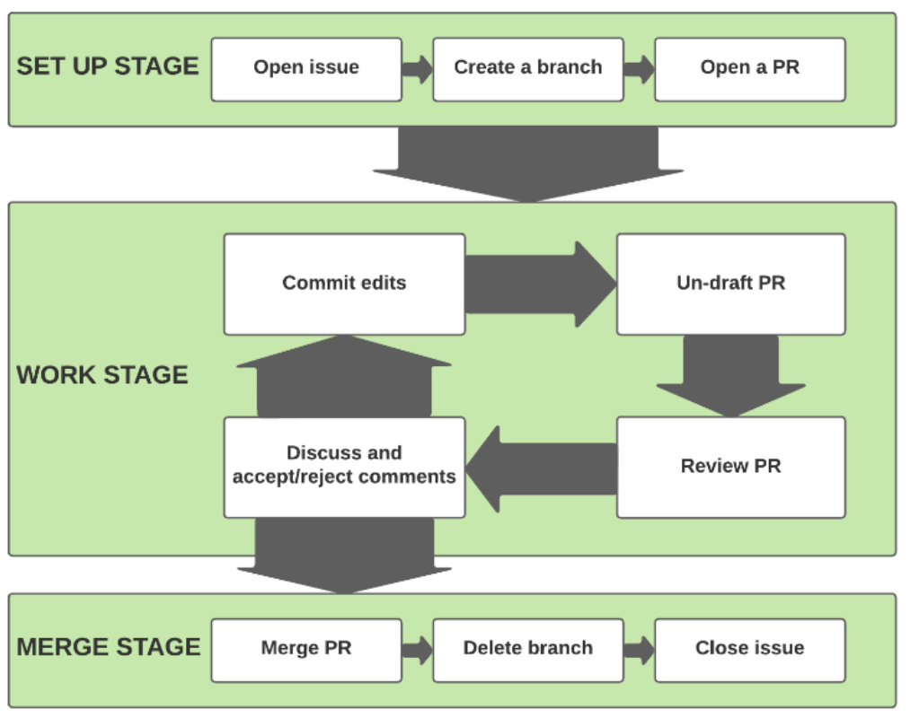

1. Github Introduction#
1. Git#
1.1. Before Starting the class#
Do you have a GitHub account? If not, click here to sign up.
Have you submitted your GitHub username to the host alexander.quispe@pucp.edu.pe?
Have you installed GitHub Desktop? If not, click here and download it.
Have you logged into GitHub Desktop at least once? If not, open GitHub Desktop and sign in with your GitHub account.
Have you been invited to the main repository? And have you accepted the invitation?
1.2. Typical Issues#
Several copies of the same document.
Problems in tracking changes.
Accidental mistakes.
Backups problems.
Messy documents.
Team working problems:
For Dropbox users, ”Copy Conflict” may sounds familiar.
Who did change the code?
No version history.
1.3. Bad Alternative Solutions#
Name files using dates in filenames.
Name files with version number.
Email Threading.

1.4. Git - The Best Solution#
Git is a version control system developed by Linus Torvalds, the famous creator of the Linux operating system kernel. We can track changes in our files in a highly structured way. Benefits:
A complete long-term change history of every file.
In this workflow, we can work in teams. Anyone can edit; anyone can access previous versions and the most recent versions.
It makes it easy to get excellent documentation of your project versions.
Being able to trace each change made and the responsibility for that change.

2. GitHub#
2.1. Definition#
GitHub is a hosting service. It provides a ”home” for your Git-based projects on the internet.
Showcase your work. Your projects are exposed on the internet and are easily shareable.
You can easily track the development of any project.
Everything is in the hosting service. Everything is going to be alright.
2.2. Key Concepts#
Repository : Set of files. It exists as a remote repository.
Clone : It is a local copy of all the repository on our computer at that point in time.
Commit : Snapshot of your repository. Git does not store data as a series of changesets or differences but instead as a series of snapshots.
Branch : It is simply a lightweight movable pointer to one of these snapshots or commits. A independent line of development.
Pull Request : It is an event when a contributor asks a maintainer of a repository to review code they want to merge into a project.
2.3. Clone#
It is not the same as downloading. When we clone a repository, we copy the complete history of that repository. Your computer uses Git software to download the version history. Additionally, we can make updates in the cloned repository that can be merged with the remote repository. When we download a repository, we do not copy the project history.
How to clone?
Go to the main page
Click on green button
Codeordownload button.
2.4. Branch#
Using Branches is Git’s ”Killer” tool. This feature of Git is what makes it so powerful as a collaboration and version control tool. It allows you to refer to any snapshot of your project.
How to create a branch?
Go to our repository in GitHub.
Write your name in that field and click on
Create branch: your name. Make sure it says ”from master”.Now another branch should appear with your name
Go to this link to see your branch.

2.5. Pull Request#
PULL REQUESST = Request that your modifications be transferred to the master branch. Usually, there is always a person who is called the REPO MAINTAINER, who has access to the master branch. Therefore, the only way to contribute to the master branch is through a pull request.
How to do a Pull Request?
Go to the
Pull Requestsection of our repository.Click on
New Pull RequestSelect your branch
Check if the modifications you are requesting for the master branch. This step is important because in case of any conflict, you will not be able to unite your changes. If everything is ok, then click on
Create Pull Request.Finally click on Create pull request again.
2.6. Issues#
We create a space in our repository to work on. This space is named as Issue.
The issues allow us to document every significant change in our repository.
We can assign and classify tasks.
Team members can provide insights on how to solve a specific task.
How to do an Issue?
Click on issue tab
New Issue.Add descriptions and assign it properly.
Add labels to facilitate future searches.
3. Branch-PR-merge Cycle#
This the best practice framework for implementing each task in a Pull Request. It has three stages. In this course, all the students must complete a full branch-PR-merge cycle for all the tasks. It will be part of the evaluation.
Set up Stage
Work Stage
Merge Stage
You could check more information about it at this link
